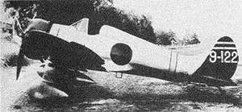

Палубный истребитель Мицубиси тип 96, Модель 4(24), Mitsubishi A5M4 (codename «Claude»)
Одноместный палубный истребитель, цельнометаллический моноплан с открытой кабиной и неубирающимся шасси. Первый в мире палубный истребитель-моноплан. Впервые прототип истребителя поднялся в воздух 04.02.1935. После длительной доводки самолёт был принят на вооружение японского флота под обозначением палубный истребитель тип 96 (A5M), серийное производство началось осенью 1936 г.
С 1938 г. строилась наиболее совершенная модификация истребителя A5M4 (модель 4, позднее переименованная в модель 24). От предыдущих модификаций она отличалась новым, более обтекаемым козырьком пилотской кабины с улучшенным обзором, развитым гаргротом и наличием радиостанции. Поскольку при сопровождении бомбардировщиков иногда приходилось садиться затемно, машину оборудовали посадочными фарами и строевыми огнями на верхней плоскости крыльев для полётов над открытым морем в тёмное время суток. Самолеты оснащались фото-кинопулемётом, размещавшимся вне планера под центропланом у левой стойки шасси.
Силовая установка состояла из 9-цилиндрового звездообразного двигателя воздушного охлаждения Накадзима Котобуки 41 номинальной мощностью 785 л.с., с двухлопастным (позже трёхлопастным) деревянным воздушным винтом изменяемого шага Сумитомо профиля VDM. Последние серийные самолеты стали оснащаться двигателями Котобуки 41КАИ той же мощности, эти машины получили обозначение модель 34.
Вооружение A5M состояло из двух фюзеляжных синхронных 7,7-мм пулемётов Ниппон-Сейкюсё тип 89 модель 2 (Vickers «class E») с боекомплектом 500 патронов на ствол. Под крылья могли подвешиваться две 30 кг бомбы тип 97. Под фюзеляжем, на несъемном пилоне, мог устанавливаться подвесной топливный бак емкостью 160 л., позднее она была увеличена до 210 л.
Истребители A5M применялись в Китае с сентября 1937 г. по сентябрь 1941 г. Применялись в начальный период войны на Тихом океане, недолго использовались в ПВО Японии и на Маршалловых островах. Затем, до конца войны эксплуатировались в учебных частях и летных школах флота. В 1945 г. использовались подразделениями «камикадзе».
В целом A5M был на уровне современных ему требований к морскому истребителю. Самолёт обладал хорошей устойчивостью и маневренностью, был прост в технике пилотирования. Однако его конструкция не имела резервов для дальней модернизации и быстро устарела. Вооружение было слабым, бронирование полностью отсутствовало, топливные баки были непротектированными, крыло обладало недостаточной прочностью.
Самолет снят с производства в 1941 г. В общей сложности изготовлено 1095 A5M всех модификаций